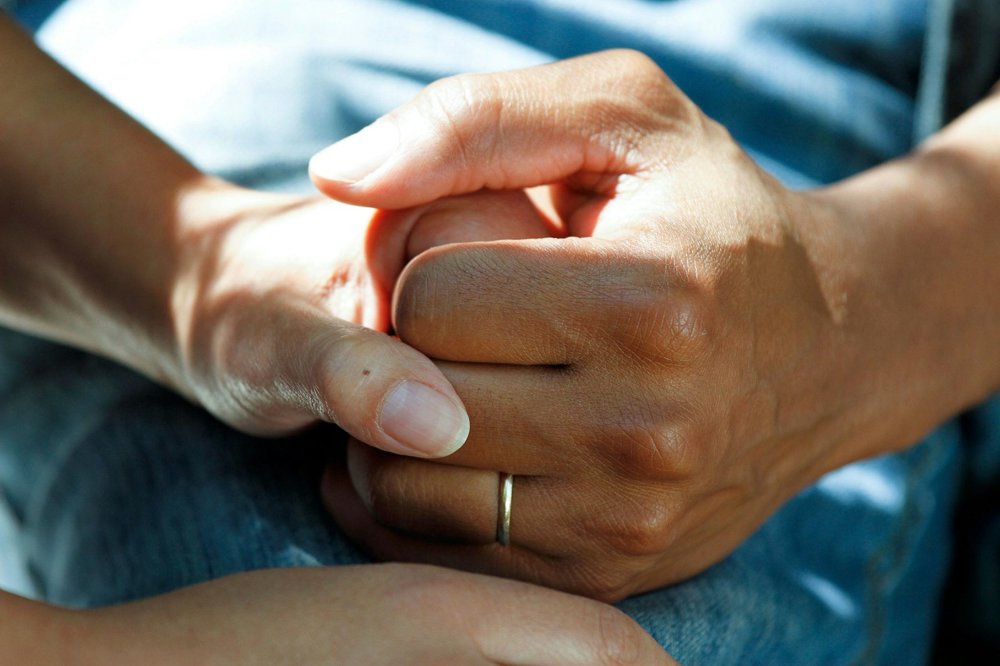

Antes de chegar às empresas, nossa história começou em um hospital.
2009 → hoje · por que a fairhealth existe?
Arraste para ler →
01 · O porquê2009
2009
Há quase 20 anos, percebemos que os pacientes estavam cada vez mais distantes do centro do cuidado.
fairhealth · Era preciso mudar essa realidade.
02 · No hospitalDesde 2009

Assim, dentro de um hospital, desenvolvemos o Escritório do Paciente para mudar essa realidade.
Com o tempo, levamos esse conceito para as empresas.
No hospital, onde tudo começou
03 · Hojefairhealth
Assim, desenvolvemos o Escritório do Cuidado.
Um espaço de acolhimento e de medicina preventiva dentro da empresa, que fortalece o cuidado centrado na pessoa.
2009No hospital
HojeNas empresas
04 · O acolhimentofairhealth
Tudo começa com uma pergunta:
“O que é importante para você?”
Antes de qualquer exame, vem uma conversa: um espaço seguro e confidencial para contar a própria história e decidir junto o próprio cuidado.
05 · O que levamosfairhealth
Levamos ao coração da sua empresa:
01Atendimento médico e psicológico
02Planos de cuidado individualizados, baseados na Medicina do Estilo de Vida
03Tecnologia, humanização e cuidado verdadeiro
06 · Pertofairhealth
Porque, quando o cuidado está perto, ele acontece.
A maior barreira ao cuidado é tempo e acesso. Por isso, o Escritório do Cuidado fica dentro da empresa, perto da rotina de quem trabalha.
07 · O PROPÓSITO
Faça o certo pelos motivos certos.
Nosso propósito é promover qualidade de vida, engajamento e um ambiente de trabalho mais saudável. Com resultados demonstrados por indicadores.
Conheça a fairhealth no link da bio.
@fairhealth.br
Antes de chegar às empresas, nossa história começou em um hospital.
2009 no hospital
Por que a fairhealth existe?
Hoje nas empresas
fairhealtho cuidado começa pela pessoa
Arraste ›
@fairhealth.br
Há quase 20 anos, percebemos que os pacientes estavam cada vez mais distantes do centro do cuidado.
Há quase 20 anos
Era preciso mudar essa realidade.
fairhealtho cuidado começa pela pessoa
Arraste ›
@fairhealth.br
Assim, dentro de um hospital, desenvolvemos o Escritório do Paciente para mudar essa realidade.
Escritório do Paciente
Com o tempo, levamos esse conceito para as empresas.
fairhealtho cuidado começa pela pessoa
Arraste ›
@fairhealth.br
Assim, desenvolvemos o Escritório do Cuidado.
Hoje · nas empresas
Um espaço de acolhimento e de medicina preventiva dentro da empresa, que fortalece o cuidado centrado na pessoa.
fairhealtho cuidado começa pela pessoa
Arraste ›
@fairhealth.br
Tudo começa com uma pergunta: o que é importante para você?
O acolhimento
Antes de qualquer exame, vem uma conversa: um espaço seguro e confidencial para contar a própria história e decidir junto o próprio cuidado.
fairhealtho cuidado começa pela pessoa
Arraste ›
@fairhealth.br
Levamos ao coração da sua empresa:
Atendimento médico e psicológico
Planos de cuidado individualizados, baseados na Medicina do Estilo de Vida
Tecnologia, humanização e cuidado verdadeiro
fairhealtho cuidado começa pela pessoa
Arraste ›
@fairhealth.br
Porque, quando o cuidado está perto, ele acontece.
Perto da rotina
A maior barreira ao cuidado é tempo e acesso. Por isso, o Escritório do Cuidado fica dentro da empresa, perto da rotina de quem trabalha.
fairhealtho cuidado começa pela pessoa
Arraste ›
@fairhealth.br
Nosso propósito é promover qualidade de vida, engajamento e um ambiente de trabalho mais saudável.
Com resultados demonstrados por indicadores.
Faça o certo pelos motivos certos.
Conheça a fairhealth no link da bio.
fairhealtho cuidado começa pela pessoa
Compartilhe ›
Antes de chegar às empresas, nossa história começou em um hospital.
@fairhealth.br
01/08
Há quase 20 anos, percebemos que os pacientes estavam cada vez mais distantes do centro do cuidado.
Era preciso mudar essa realidade.
@fairhealth.br
02/08
Assim, dentro de um hospital, desenvolvemos o Escritório do Paciente para mudar essa realidade.
Com o tempo, levamos esse conceito para as empresas.
@fairhealth.br
03/08
Assim, desenvolvemos o Escritório do Cuidado.
Um espaço de acolhimento e de medicina preventiva dentro da empresa, que fortalece o cuidado centrado na pessoa.
@fairhealth.br
04/08
Tudo começa com uma pergunta: o que é importante para você?
Antes de qualquer exame, vem uma conversa: um espaço seguro e confidencial para contar a própria história e decidir junto o próprio cuidado.
@fairhealth.br
05/08
Levamos ao coração da sua empresa:
01 Atendimento médico e psicológico 02 Planos de cuidado individualizados, baseados na Medicina do Estilo de Vida 03 Tecnologia, humanização e cuidado verdadeiro
@fairhealth.br
06/08
Porque, quando o cuidado está perto, ele acontece.
A maior barreira ao cuidado é tempo e acesso. Por isso, o Escritório do Cuidado fica dentro da empresa, perto da rotina de quem trabalha.
@fairhealth.br
07/08
Nosso propósito é promover qualidade de vida, engajamento e um ambiente de trabalho mais saudável.
Com resultados demonstrados por indicadores.
Faça o certo pelos motivos certos.
Conheça a fairhealth no link da bio.
@fairhealth.br
08/08
2009
Antes de chegar às empresas, nossa
História
começou em um hospital.
2009 → hoje · por que a fairhealth existe?
@fairhealth.br
o porquê
Há quase
20 anos,
percebemos que os pacientes estavam cada vez mais distantes do centro do cuidado. Era preciso mudar essa realidade.
@fairhealth.br
no hospital
Assim, dentro de um
hospital,
desenvolvemos o Escritório do Paciente para mudar essa realidade. Com o tempo, levamos esse conceito para as empresas.
Escritório do Paciente
@fairhealth.br
hoje
Assim, desenvolvemos o Escritório do
Cuidado.
Um espaço de acolhimento e de medicina preventiva dentro da empresa, que fortalece o cuidado centrado na pessoa.
Hoje · dentro da sua empresa
@fairhealth.br
a conversa
Tudo começa com uma
pergunta:
o que é importante para você? Antes de qualquer exame, vem uma conversa: um espaço seguro e confidencial para contar a própria história e decidir junto o próprio cuidado.
@fairhealth.br
o que levamos
Levamos ao coração da sua
empresa:
Atendimento médico e psicológico
Planos de cuidado individualizados, baseados na Medicina do Estilo de Vida
Tecnologia, humanização e cuidado verdadeiro
@fairhealth.br
perto
Porque, quando o cuidado está
perto,
ele acontece. A maior barreira ao cuidado é tempo e acesso. Por isso, o Escritório do Cuidado fica dentro da empresa, perto da rotina de quem trabalha.
@fairhealth.br
Nosso
propósito
é promover qualidade de vida, engajamento e um ambiente de trabalho mais saudável. Com resultados demonstrados por indicadores.